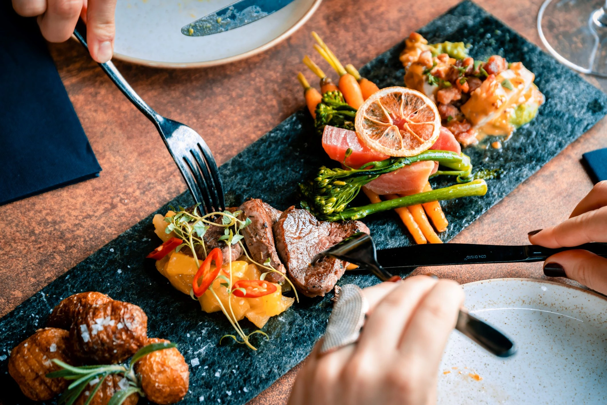

The Atmantan cuisine philosophy follows the principles of ‘‘let food be thy medicine, and medicine be thy food’’ by Hippocrates, the Father of Medicine.
Our wellness cuisine is prescriptive in its approach wherein it assists the body in restoring health, strength, balance and enhancing longevity.
The cuisine here only uses evidence based foods, known for its medicinal benefits and the dishes served are nutritious, appealing and bursting with colours and energy, to delight your senses, while healing your cells.
Atmantan’s gastronomical experience has its roots in age old traditions, which maintain and restore health, vitality and wellbeing. We recognize the healing power of earth’s medicine in the form of plant based ingredients including the healing properties of aromatic herbs and spices, and hence only use farm fresh plant and seeds produce.
We believe that wholesome, organic, seasonal, local and nutritionally dense ingredients are the basic building blocks of healthy cuisine. We carefully prepare these ingredients into delicious healthy dishes as per Doctors’ prescription and individual requirements (allergies etc.). Our own organic farms supply to Atmantan’s kitchens as well. The Concept that wellness cuisine… nobody does this better than Atmantan!
Dishes that are tastefully plated and nourishing, can be relished here as part of the wellness experience of a guest. The eating habits encourage mindfulness such that the guest incorporates the same into his/her daily schedule when he/she leaves from here.
The cuisine is simply inspiring and the food here takes in all the nutrients and vitality that nature has to offer. Following the farm-to-table concept, seasonal produce is brought to our kitchens where it is transformed into meals that create lasting impressions. The main idea is that food should therapeutically heal the body, whilst being consumed in tandem with wellness. The Wellness Cuisine here helps keep the body, mind and soul healthy, rejuvenated and positive at all times.
Pure Vegetarian food is Satvik food which increases our sattva or consciousness.
Richest source of all phytonutrients, polyphenols, and antioxidants.
Studies show that vegetarians have a longer life expectancy.
Vegetarian food is alkaline in nature and hence, highly recommended to treat diseases that originate due to the increased acidic pH of the body.
Wholefoods, those are unprocessed, unrefined and full of essential micronutrients, dietary fibre and naturally occurring protective substances, such as phytochemicals which are essential for your health.
Fresh, locally harvested and seasonal foods, that have their flavours intact, which are released just as we eat them. These are picked as they ripen, and contain the maximum sun energy inside their skins.
Organic foods that are nutrient dense and pack a far greater anti-oxidant punch than their conventional chemically treated brothers.
We believe that food is one of life’s sustainable pleasures, hence we create dishes that sustain the body whilst delighting the taste buds. We only use natural additives and flavours, such as herbs and spices to enhance our dishes. E.g. We only use pink and rock salts that both add minerals as well as flavour to the food.
We use healthy cooking techniques such as braising, steaming, poaching and grilling, while keeping cooking temperatures low, so as to retain as much of the natural flavour and nutrients as possible, whilst ensuring the food is easy to digest.
We bring in tastes through natural ingredients only. E.g., When a sweet taste is required, we use only natural sweeteners like fruit juice, honey, jaggery or coconut flower syrup. These besides adding the required taste provide so much more in terms of minerals and anti-oxidants, than the empty calories from white sugar.
We use healthy oils and good fats and whilst these are minimally used in our cooking, when we do use them, we make sure we use only the best.
We practice food synergies – each ingredient on the plate supports the other, while providing the best possible food combinations for the body.
All our dishes are colourful, while also benefitting guests with many different and valuable flavonoids (phytonutrients), which provide amazing anti-oxidant and anti-inflammatory benefits.
We promote a healthy attitude towards eating and serve measured portions which create a more mindful eating practice.